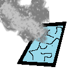

You may have enable flash and / or click the game before you can play.
Load this page on a desktop browser with a screen width of at least 780 pixels to play! 
Instructions: Use the mouse to select upgrades and begin the run. If you've played before your last set of
upgrades will still be selected. If you want different ones, just click one de-select it.
During the run you can move by clicking a tile, using the arrow keys, or the WASD keys.
You can attack a monster by clicking on it. If you'd like to enable attacking just by walking into a monster
you can do so on the status screen.
Pull up the status screen by pressing the Spacebar. From here you can pick up new equipment in the same tile
your character by clicking it. Be careful! Old items you replace are lost forever.
Your total winnings will be saved each time you finish a run by winning, losing, or retiring. (Retire at any time by
pressing Shift plus Esc on the status screen.)
Many elements in the game will provide help text when you hover the mouse over them. If you get confused,
be sure to check the help text.
More instructions can be found by clicking the ? on the bottom of the screen during the game.